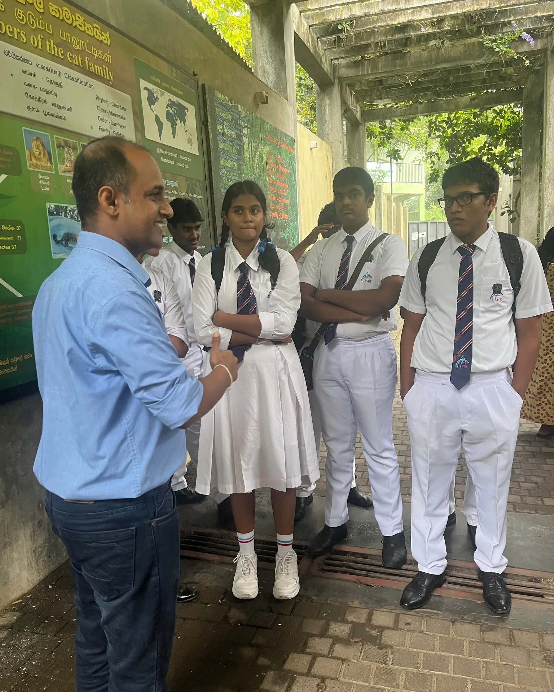
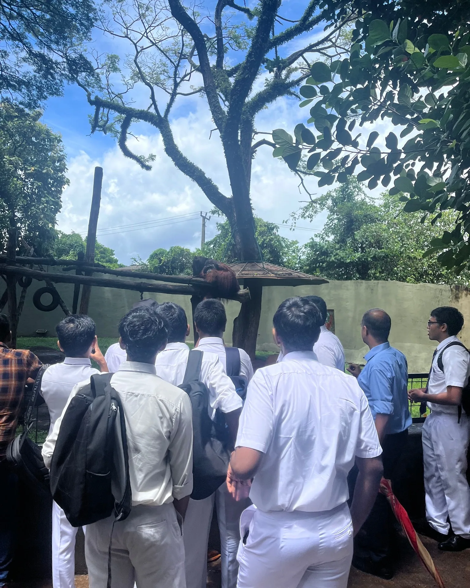
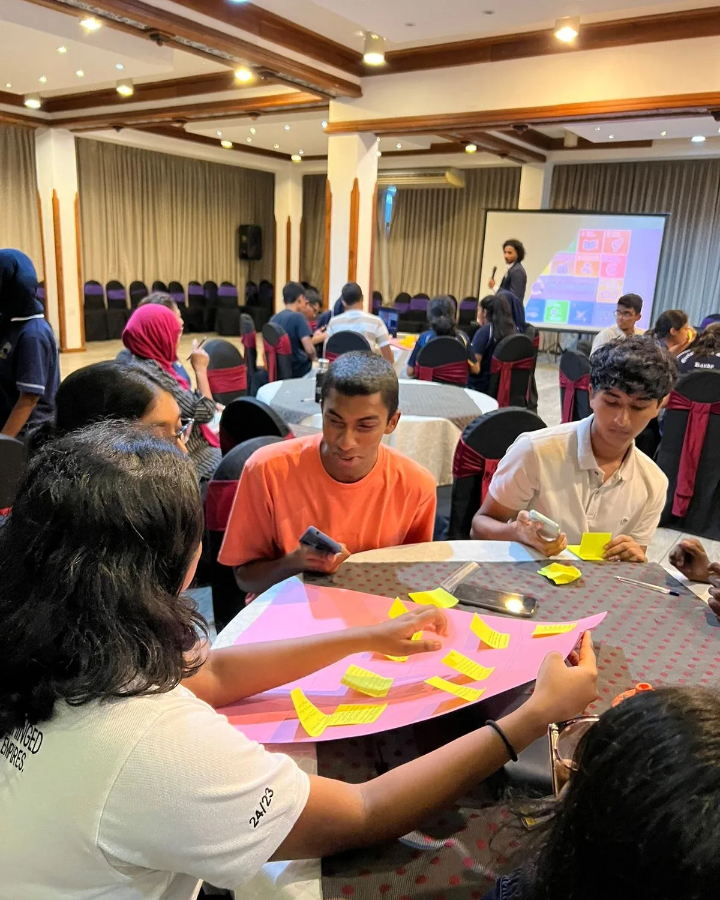
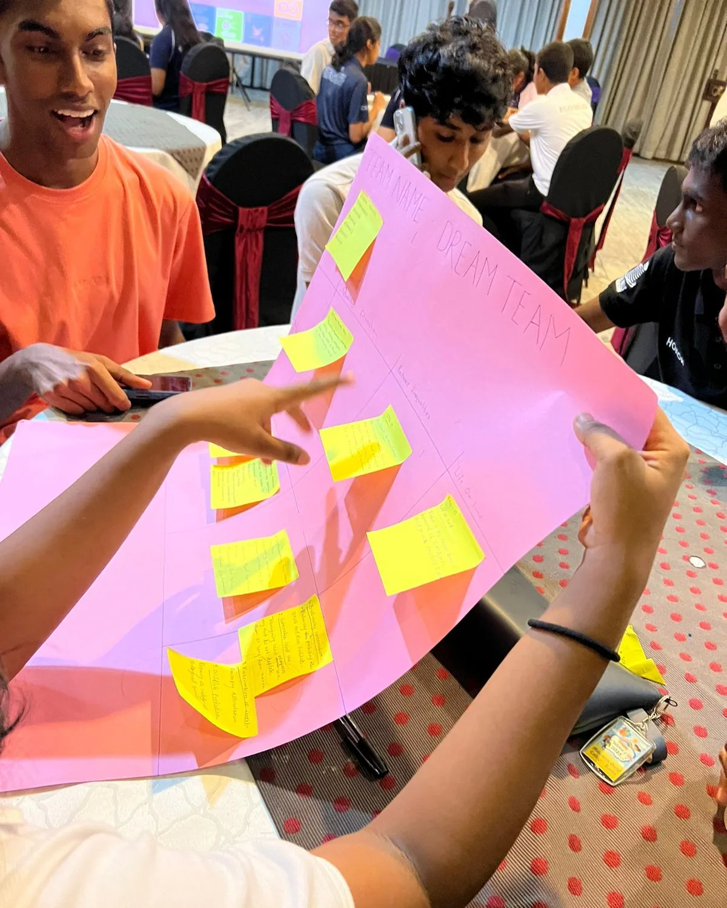
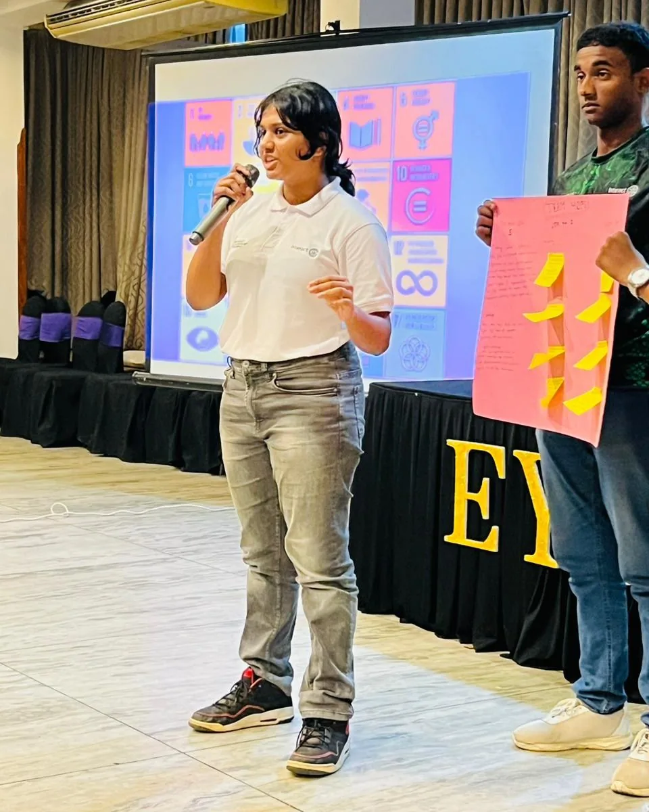
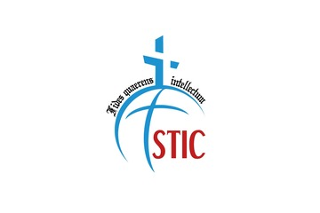
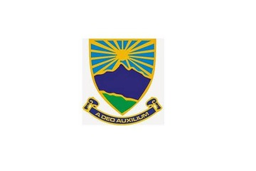
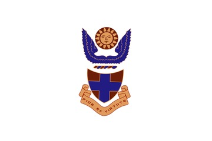
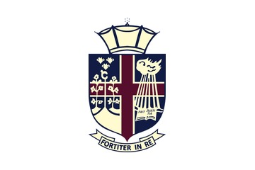

Build the base
Sessions connect climate, biodiversity, environmental rights and sustainable development to examples students can recognise and question.

CuteFela’s school work combines environmental and human rights learning with field exposure and student activity that can continue after the visit.
The programme follows a practical three stage model. Learning begins in school, expands through field exposure and continues through working groups, nurseries or other student projects.
Sessions connect climate, biodiversity, environmental rights and sustainable development to examples students can recognise and question.
Field exposure can include national parks, zoological gardens, restoration settings, response institutions and other places where environmental decisions become visible.
Student focal points, working groups, nurseries and small projects create a way for the learning to continue without needing CuteFela in the room every week.

A classroom can introduce ecosystems, climate risk, wildlife management and rights. Field visits then give students a chance to see the institutions, habitats and practical decisions behind those ideas.
Good field learning starts with a clear question, follows a purposeful route through the site and gives students time to reflect on what they observed.
These photographs show programme sessions, collaborative activities and field learning with students.



Each school partnership is presented consistently so the focus remains on the learning relationship.




Tell us the age group, location, learning goals, available time and whether a field component is realistic.